Do not.
Given n men and n women with preference lists, can we find a stable marriage?
A stable marriage is a matching that contains no blocking pairs.
A blocking pair is any man & woman who would prefer to be with one another than who they're currently paired with.
A blocking pair is any man & woman who would prefer to be with one another than who they're currently paired with.
$m_1$ proposes to $w_1$
$w_1$ accepts $m_1$'s proposal. $m_2$ proposes to $w_4$
$w_4$ accepts $m_2$'s proposal. $m_3$ proposes to $w_4$
$w_4$ rejects $m_3$'s proposal. $m_3$ proposes to $w_3$
$w_3$ accepts $m_2$'s proposal. $m_4$ proposes to $w_4$
$w_4$ accepts $m_4$'s proposal, breaking with $m_2$. $m_2$ proposes to $w_2$
$w_2$ accepts $m_2$'s proposal, creating a stable marriage
(1) Does this algorithm always terminate?
(2) Is it guaranteed to produce a stable marriage?
This algorithm is called the Gale-Shapely algorithm.